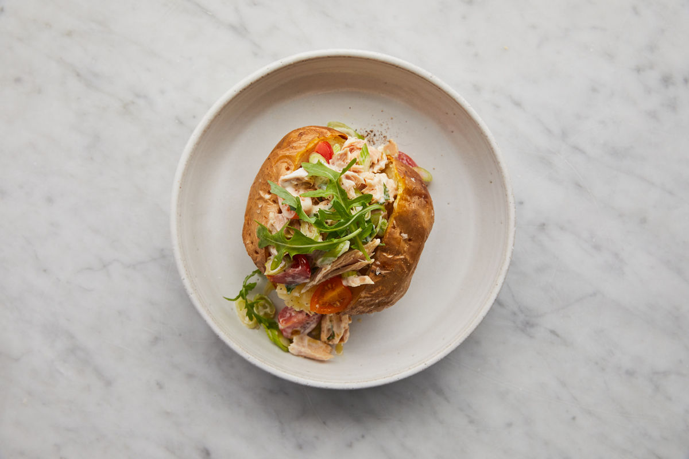
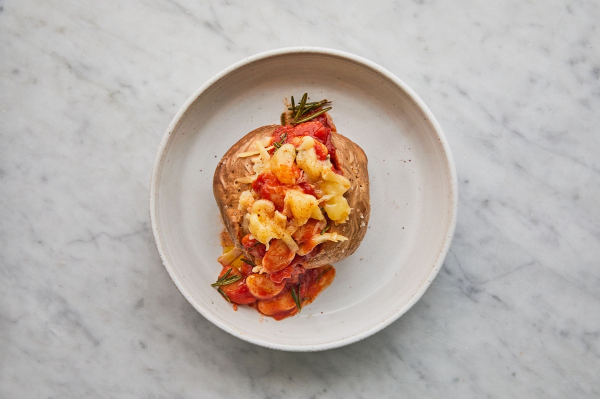
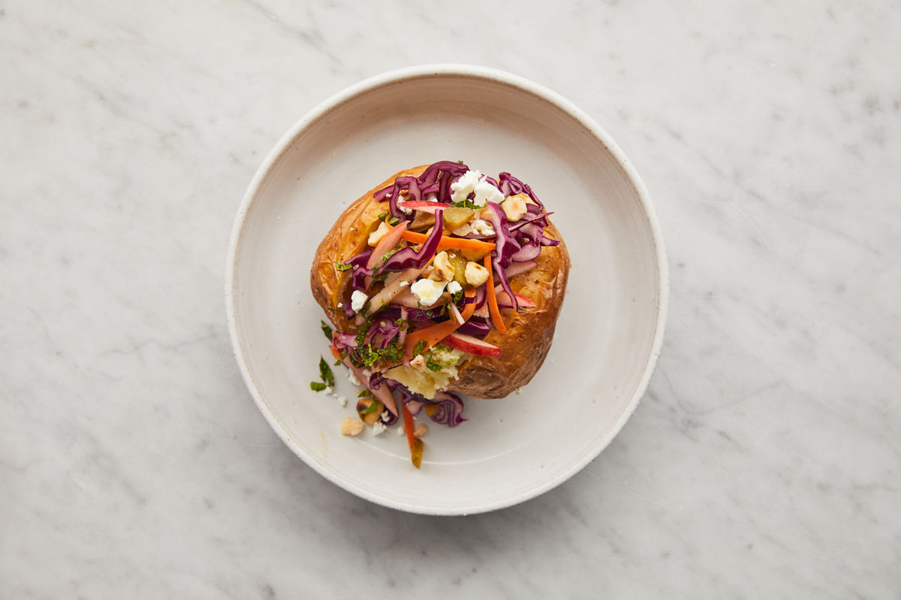

1. Jamie
(from Jamie - also his loaded skins)
Medium 100-170g
-
Preheat the oven to 200°C/400°F/gas 6.
-
Wash and scrub the potato and dry with a clean tea towel – dry skin will ensure it’ll be crispy once baked.
-
Rub with olive oil (oil also helps the skin go golden) and season with sea salt, then use a fork to pierce it six times, all around the potato.
-
Place on a baking tray and bake for 1 hour to 1¼ hours, until the potato is crispy on the outside and soft on the inside.
-
Transfer to a board and cut open straight away – if you let the potato sit after baking, the interior will steam and the potato can become soggy and heavy.
1.1. Tuna

Upgrade your classic tuna mayo by stirring through quartered cherry tomatoes and finely sliced spring onion, pile into your potato and finish with a handful of rocket.
1.2. Baked Beans & Cheese

Roughly chop a garlic clove and fresh red chilli, and add to a saucepan with a tin of cannellini beans, (tin of) plum tomatoes, (tsp) smoked paprika and a splash of Worcestershire sauce. Stir and simmer until thickened. Spoon over your potato and add a sprinkling of grated Cheddar cheese.
1.3. Home Baked Beans (cowboy beans)
(serves 4)
From BBC
Ingredients
-
4 baking potatoes
-
1 tbsp sunflower oil
-
1 carrot, diced
-
1 celery stalk, diced
-
400g can haricot beans, drained
-
2 tomatoes, chopped
-
1 tsp paprika - choose sweet or hot depending on taste
-
1 tsp Worcestershire sauce
-
2 tbsp chopped chives, to serve
Method
Heat oil in a pan and gently cook diced (carrot and celery) for 10 mins until softened. Add the (haricot) beans, tomatoes and (tsp) paprika and cook gently for a further 5 mins until the tomatoes are softened and pulpy. Stir in 100ml water and the Worcestershire sauce, cook for a further 5 mins, scatter with chives and serve.
| can obviously add grated cheddar either on top or mixed through. |
1.4. Rainbow Slaw

Grate up a colourful mix of red cabbage, carrot, apple, red onion and gherkins and dress with a splash of the gherkin juice, extra virgin olive oil and your choice of soft herbs, then use it to top your potato. Crumble over feta cheese and sprinkle with toasted hazelnuts for extra crunch.
2. BBC Good Food
Heat oven to 220C/200C fan/gas 7. Rub a little oil and seasoning over the potatoes, then bake on a baking sheet for 25 mins. Turn down the oven to 190C/170C fan/gas 5 and bake for 1 hr-1 hr 15 mins more until the flesh is tender and the skin crisp and golden. For a quicker option, prick a potato with a fork. Wrap in a sheet of kitchen paper and microwave on High for 8-10 mins until soft inside. For crisp skin, rub with a little oil, then flash under a hot grill, turning often. To serve, slice a cross in the centre, squeeze the base to ‘pop’ the top, then choose your favourite filling.
2.1. Bonfire Night baked potatoes
Ingredients
(serves 4)
-
4 medium baking potatoes
-
2 tbsp olive oil
-
25g butter
-
1 large onion, finely sliced
-
6slices smoked streaky bacon, chopped
-
2 tbsp double cream
-
200g mixed good melting cheese, such as reblochon, raclette or gruyère
-
chopped parsley, to serve
Method
STEP 1
Heat oven to 200C/180C fan/gas 6. Prick the potatoes all over with a fork, then rub with half the oil, some sea salt and black pepper. Arrange on a baking tray and bake in the oven for about 1 hr 15 mins, until their skins are crisp and they are completely tender when prodded.
STEP 2
Meanwhile, heat the remaining oil and half the butter in a frying pan. Add the onion and gently cook for 15-20 mins until softened and golden. Remove from the pan and set aside, add the chopped bacon and fry until just crisp. Remove using a slotted spoon and place on kitchen paper.
STEP 3
Halve each potato lengthways (watch out, they will be hot), then scoop out most of the potato into a bowl, leaving a potato skin shell with a thin layer of potato. In the bowl, crush the potato with the remaining butter and the double cream. Season with salt and pepper. Fold through the onion, bacon, three-quarters of the cheeses and half the parsley. Spoon back into the potato shells and top with the remaining cheese. Transfer to the baking tray and return to the oven for 10-15 mins, until melting and golden. Sprinkle with the remaining parsley and serve with a sharply dressed crisp salad, if you like.
2.2. Chilli & Soured Cream
Can bake the chilli in the oven with the potatoes for 30mins. Then cut a cross in the top of each potato and squeeze the sides to open. Spoon in the baked chilli and top with soured cream, cheese and coriander if you like.
2.3. Salmon & Soft Cheese
For the salmon and soft cheese filling, mix 50g light soft cheese with a squeeze lemon juice and seasoning. Pile into a jacket potato and flake 1 hot-smoked salmon fillet on top. Sprinkle with 1 heaped tsp capers and a little lemon zest.
2.4. Corn, Chilli, and Avocado Salsa
Drain 198g can sweetcorn and mix with 1 diced avocado, 1 small chopped red chilli, juice 1 lime, 1 tbsp finely chopped red onion and a small handful coriander leaves. Season and pile into 2 jacket potatoes or 2 baked sweet potatoes.
2.5. Smoky Bacon Beans
Dice 4 smoked streaky bacon rashers and 1 onion, then fry until the onion is soft. Stir in 2 x 400g cans baked beans and 1 tsp each brown sugar, mild chilli powder and paprika. Warm through and divide between 4 jacket potatoes. Top each with a dollop of soured cream and a few snipped chives.
2.6. Chickpea Curry
Ingredients
4 sweet potatoes
1 tbsp coconut oil
1 ½ tsp cumin seeds
1 large onion, diced
2 garlic cloves, crushed
thumb-sized piece ginger, finely grated
1 green chilli, finely chopped
1 tsp garam masala
1 tsp ground coriander
½ tsp turmeric
2 tbsp tikka masala paste
2 x 400g can chopped tomatoes
2 x 400g can chickpeas, drained
lemon wedges and coriander leaves, to serve
Method
STEP 1
Melt the coconut oil in a large saucepan over medium heat. Add the cumin seeds and fry for 1 min until fragrant, then add the onion and fry for 7-10 mins until softened.
STEP 2 Put the garlic, ginger and green chilli into the pan, and cook for 2-3 mins. Add the spices and tikka masala paste and cook for a further 2 mins until fragrant, then tip in the tomatoes. Bring to a simmer, then tip in the chickpeas and cook for a further 20 mins until thickened. Season.
2.7. Whipped Feta & Sumac

Ingredients (for 1)
1 baking potato
2 tsp olive oil
½ tsp garlic salt
50g feta
50g Greek yogurt
1 roasted red peppers from a jar (about 25g), finely chopped
½ tsp sumac
few basil leaves, to serve (optional)
Method
Crumble the feta into a bowl, add the yogurt and whisk together until creamy. Stir in the red pepper with a good grind of black pepper and spoon the whipped feta into the jacket. Sprinkle with the sumac, drizzle over the remaining 1 tsp olive oil and scatter a few torn basil leaves on top, if you like
2.8. Pulled Pesto Chicken
Ingredients (serves 2)
2 cooked, skinless chicken breasts
100g cream cheese
2 tbsp fresh pesto
2 baked sweet potatoes
toasted pine nuts and torn basil leaves, to serve
Method
Shred the chicken breasts using forks. Mix with the cream cheese and pesto. Split the baked sweet potatoes, then fill with the chicken mixture and top with the pine nuts and basil leaves.
2.9. Three Bean Chilli
Ingredients (serves 2)
2 baking potatoes (about 180g each)
1 tbsp olive oil
1 yellow or orange pepper, deseeded and chopped
2 garlic cloves, finely grated
1 tsp cumin seeds
½ tsp chilli flakes
1 tsp smoked paprika
1 tsp ground coriander
1 tsp dried oregano
400g can chopped tomatoes
2 tsp vegetable bouillon powder
400g can three bean salad (cannellini, flageolet and adzuki), drained
handful of coriander, chopped, plus extra leaves to serve
1 small avocado, stoned, halved and chopped or mashed
1 lime, cut into wedges
Method
STEP 1
Heat the oil in a non-stick frying pan and fry the pepper and garlic for a few minutes. Stir in the cumin seeds, chilli flakes and spices, then tip in the tomatoes, bouillon powder and beans. Bring to a simmer, cover and cook for 15 mins, or until reduced to a thick sauce. Stir in the chopped coriander.
STEP 3
Cut a cross into the tops of the baked potatoes and gently press on the sides to open them out. Spoon over the chilli, then top with the avocado and squeeze over some of the lime wedges. Scatter over some coriander leaves and serve with the remaining lime wedges.
2.10. Turkey Chilli Jacket Potatoes
Ingredients (serves 4)
4 large baking potatoes
1 tbsp olive oil
1 onion, chopped
1 garlic clove, crushed
300g turkey mince
1 tbsp smoked paprika
1 tbsp ground cumin
1 tbsp cider vinegar
1 tbsp soft light brown sugar
350ml passata
reduced-fat red leicester, grated, to serve
4 spring onions, chopped, to serve
Method
STEP 1 While the potatoes are cooking, make the chilli. Heat the remaining oil in a large frying pan over a medium heat. Add the onion, garlic and some seasoning, and cook for 5 mins until soft. Add the turkey mince and season again, then increase the heat and break up the mince with the back of your spoon. When it’s cooked through, add the spices, vinegar, sugar and passata. Reduce to a simmer and cook for 10 mins or until the liquid has reduced.
STEP 2 Cut a cross in the top of each potato and spoon in the chilli. Serve each potato sprinkled with cheese and spring onions.
Comments
-
"added a green pepper and a fresh chilli with the onion and also added sweet paprika, some tomato ketchup, tomato purée and Worcestershire sauce as well as a beef stock cube before the passata,didn’t add the sugar or vinegar."
-
"This was WAY too sweet - did anyone else find it so? On reheating leftovers I added Worcester sauce and extra vinegar which took the sweetness down a notch.."
-
"This is a good base recipe and turkey mince is a lovely alternative. However, like others I’ve adapted this recipe and added bits. I would recommend whilst adding the spices to also add a tablespoon of chilli powder, a generous few dash of Worcestershire sauce, 100mls of veg/beef stock, mix together and then I also add 1 finely chopped pepper- colour of your choosing, and beans/kidney beans. Add the Passata and simmer"
-
"This is a really good and easy alternative to beef mince. Since turkey mince comes in packs of 500g, and passata in 500ml, I used all of that and doubled the garlic, spices, sugar and vinegar. Could have doubled onion too but I didn’t have any more. I added hot chilli powder which I think gave it more depth. I also ignored the jacket potato instructions and did my usual 20 mins at 200 and 60 mins at 180 (fan)."
-
"After reading the comments I decided to add a few extras to add some flavor - increased the paprika and cumin, added a beef stock cube, Worcestershire sauce, chilli powder and some taco mix that I already had in. I took a bit longer than 10 mins to reduce, but tasted yummy. I guess it all depends if you like it mild or spicy - I guess its one recipe you can play around with."
-
"I used tinned tomatoes in place of pasatta, tastes fantastic, perfect consistency, needs time to bring the flavours out of the spices and to reduce."
-
"I added kidney beans too and also sweetcorn and pinch of mild chilli powder and it was really really good. Children and hubby gave it a big thumbs up!"
2.11. Double Bean & Roasted Pepper Chilli
Ingredients (servers 8)
2 onions, chopped
2 celery sticks, finely chopped
2 yellow or orange peppers, finely chopped
2 tbsp sunflower oil or rapeseed oil
2 x 460g jars roasted red peppers
2 tsp chipotle paste
2 tbsp red wine vinegar
1 tbsp cocoa powder
1 tbsp dried oregano
1 tbsp sweet smoked paprika
2 tbsp ground cumin
1 tsp ground cinnamon
2 x 400g cans chopped tomatoes
400g can refried beans
3 x 400g cans kidney beans, drained and rinsed
2 x 400g cans black beans, drained and rinsed
Method
STEP 1 Put the onions, celery and chopped peppers with the oil in your largest flameproof casserole dish or heavy-based saucepan, and fry gently over a low heat until soft but not coloured.
STEP 2 Drain both jars of peppers over a bowl to catch the juices. Put a quarter of the peppers into a food processor with the chipotle paste, vinegar, cocoa, dried spices and herbs. Whizz to a purée, then stir into the softened veg and cook for a few mins.
STEP 3 Add the tomatoes and refried beans with 1 can water and the reserved pepper juice. Simmer for 1 hr until thickened, smoky and the tomato chunks have broken down to a smoother sauce.
STEP 4 At this stage you can cool and chill the sauce if making ahead. Otherwise add the kidney and black beans, and the remaining roasted peppers, cut into bite-sized pieces, then reheat. (This makes a large batch, so once the sauce is ready it might be easier to split it between two pans when you add the beans and peppers.) Once bubbling and the beans are hot, season to taste and serve.
2.12. Pulled Chicken & Black Bean Chilli
Ingredients (serves 4)+
2 tbsp sunflower oil
2 onions, sliced
4 boneless, skinless chicken thighs
3 garlic cloves, finely chopped
1 tbsp oregano
1 tsp cumin seeds
3 tbsp chipotle in adobo or 1 tsp chipotle paste
350g passata
1⁄2 chicken stock shot or cube
400g can black beans, drained but not rinsed
1⁄2 lime, juiced
cooked rice or tortillas, coriander, feta, lime wedges and chopped red onion, to serve (optional)
Method
STEP 1 Heat the oil in a shallow saucepan or casserole dish with a lid. Tip in the onions and cook over a medium-low heat for 5 mins until softened. Add the chicken and turn up the heat to medium. Stir in the garlic, a small pinch of sugar, the oregano, cumin seeds and some seasoning. Cook for a couple of minutes, then add the chipotle and cook for a few minutes more. Pour in the passata, 100ml water and add the stock. Season and bring to a simmer.
STEP 2 Cover with a lid and cook for 40-50 mins, stirring occasionally until the chicken is tender. Shred the chicken into the sauce using two forks, then stir through the beans. Simmer for 5 mins more, then turn off the heat. Squeeze in the lime juice. Can be kept chilled for three days and frozen for up to two months. Defrost thoroughly and reheat. Serve with rice or tortilla wraps, and some coriander, feta, lime wedges and red onion on the side, if you like.
2.13. Tuna & Sweetcorn filling
Ingredients (serves 4)
3 sml tins tuna in springwater, drained, flaked
1 x 125g can corn kernels, drained, rinsed
60ml mayonnaise
1 spring onion, thinly sliced diagonally
Cherry tomatoes?
½ Chilli?
Combine in a bowl with salt 'n' pepper. Serve sprinkled with spring onion.
2.14. Brocolli Baked Potatoes
Ingredients (serves 4)
4 baking potatoes
300g broccoli, cut into small florets
1 tbsp wholegrain mustard
1 egg, beaten
140g grated cheddar
Method
Cook potatoes, cook and drain brocolli, scoop potatoes into a bowl. Put the potato shells on a baking sheet. Mash the flesh with a fork, then stir in the mustard, egg, most of the cheese and the broccoli. Season if needed, then pile back into the shells. Sprinkle with the reserved cheese and bake for 15 mins until the tops are crisp and golden. Serve with salad and Tomato relish (see recipe, below).
Comments
"because I was making for one, swapped egg for a desert spoon of cream cheese to save trying to divide an egg into four!…..very satisfying and pretty healthy - wholegrain mustard really pulls flavours together."
2.15. Tangy Tomato Relish
Heat 1 tbsp oil in a pan, add 1 finely chopped onion, then gently fry until softened. Stir in 1 crushed garlic clove, 300ml tomato passata, 1 tbsp each red wine vinegar, muscovado sugar and Worcestershire sauce (vegetarian versions available), then bring to the boil. Simmer for 5 mins, taste and season if necessary, then serve warm or cold with the Broccoli baked potatoes. This relish is also delicious with sausages.